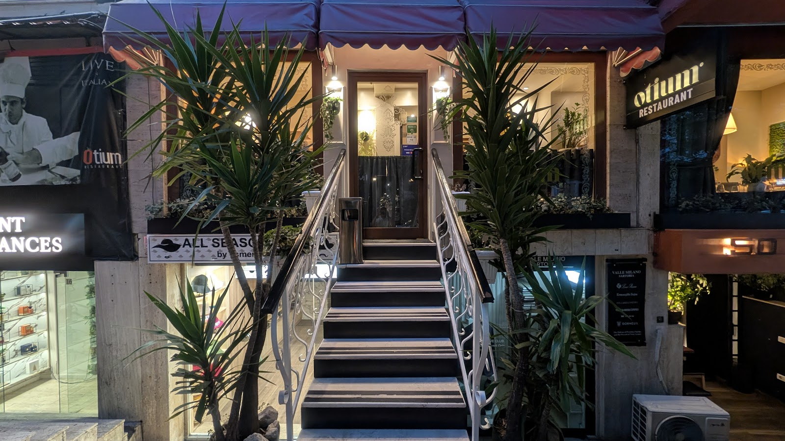
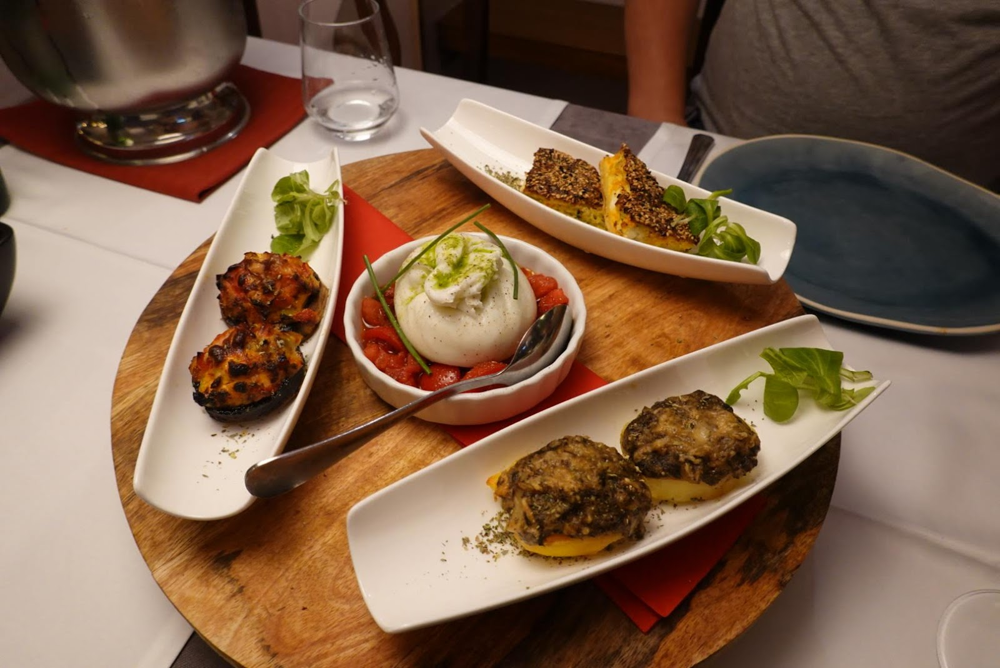
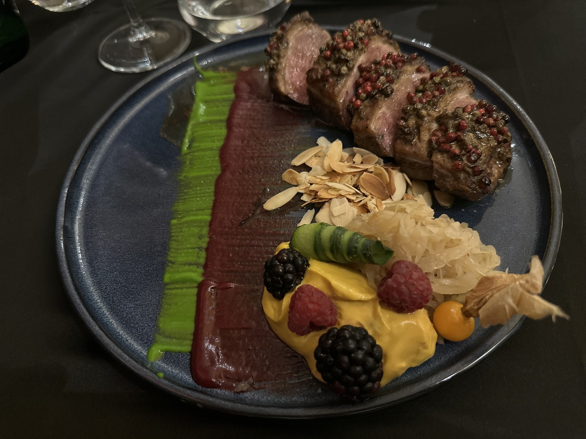
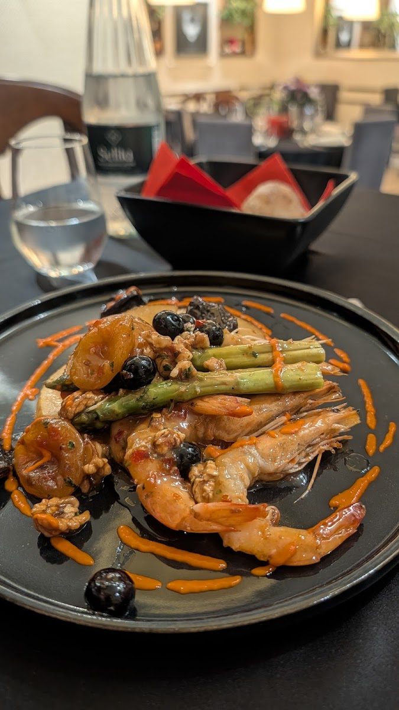
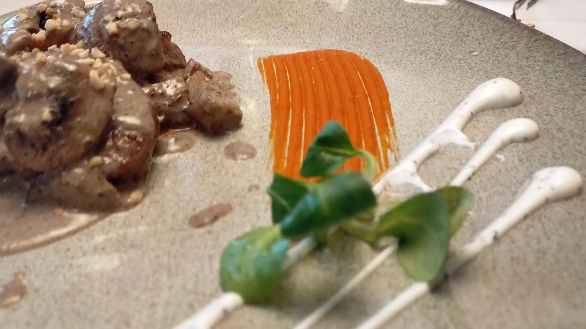

Pjata e shtëpisë
Qengji i gatuar ngadalë, me salcë libaneze
I butë, me shije të thellë dhe një ëmbëlsi delikate nga marinimi në qumësht. Pjata më e lavdëruar e Otium.

Kuzhinë fine evropiane me shpirt mesdhetar dhe përbërës shqiptarë. Pa meny të shtypur. Çdo ditë, Master Chef Arvin Kita propozon pjatat më të freskëta të ditës.
Tek Otium nuk do të gjeni një meny të shtypur. Çdo mëngjes, Master Chef Arvin Kita zgjedh përbërësit më të mirë të tregut dhe ndërton prej tyre pjatat e ditës: pak në numër, të menduara me kujdes, kurrë të njëjta.
Prej më shumë se shtatëmbëdhjetë vitesh, kuzhina këtu bashkon teknikën franceze e evropiane me shijet e Mesdheut dhe përbërësit shqiptarë. Çdo pjatë vjen si vepër arti, e shoqëruar nga një listë verash që stafi e njeh në detaje.
"Elegancë e shërbyer në ngjyrë, teksturë dhe ekuilibër."

Menyja ndryshon çdo ditë sipas tregut. Këto janë disa nga pjatat që mysafirët i kujtojnë më shumë.


Pjata e shtëpisë
I butë, me shije të thellë dhe një ëmbëlsi delikate nga marinimi në qumësht. Pjata më e lavdëruar e Otium.

Po ashtu në tryezë: oktapod në skarë, foie gras, viç me salcë tartufi, burratë dhe panna cotta.
Listë verash franceze e shqiptare, me këshillim në tryezë.
Otium në latinisht do të thotë çlodhje e qetë, arti i të shijuarit pa nxitim. Pikërisht këtë kërkojmë t'ju japim: një sallë të vogël e intime në zemër të Bllokut, të bërë për mbrëmje të ngadalta dhe raste të veçanta.
Shërbim i ngrohtë e diskret, muzikë e këndshme dhe një tryezë që nuk ke pse ta lësh me nxitim.
"Ushqimi ishte tepër i mirë dhe vera fantastike, më i miri që provuam gjatë dhjetë ditëve në Shqipëri."
Niels S., Gusht 2025
"Çdo pjatë ishte një vepër arti, një gosti për sytë."
Lulëzim Lika
"E njëjta cilësi në Francë do të kushtonte katër herë më shumë."
Greg (TripAdvisor)
Rezervime me telefon ose në Instagram. Këshillohet pagesa me para në dorë (lek ose euro).
Otium pret pak mysafirë çdo mbrëmje, ndaj një rezervim është gjithmonë ide e mirë. Na telefononi ose na shkruani në Instagram.